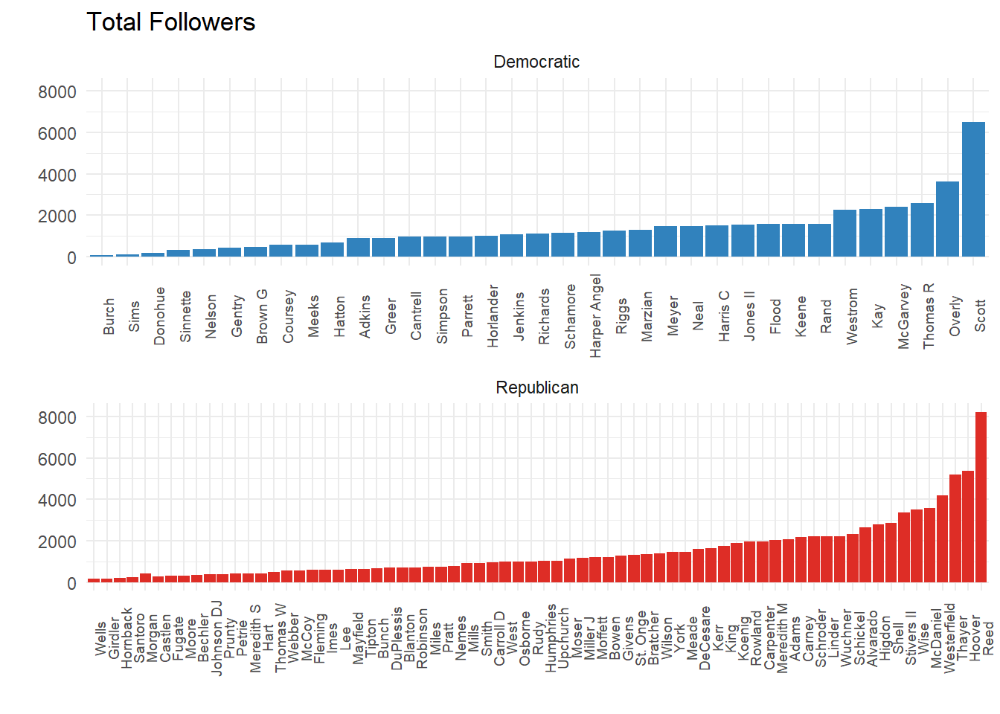
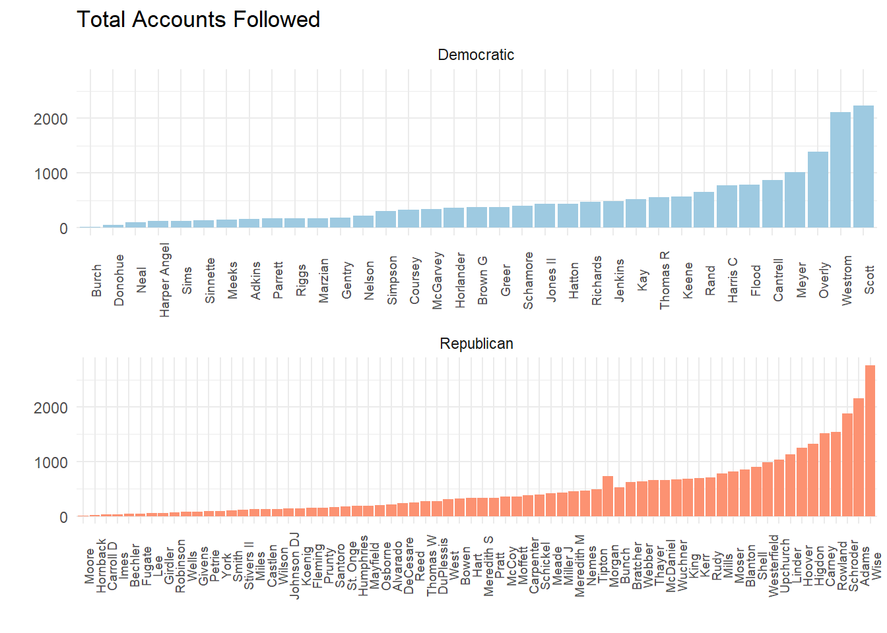
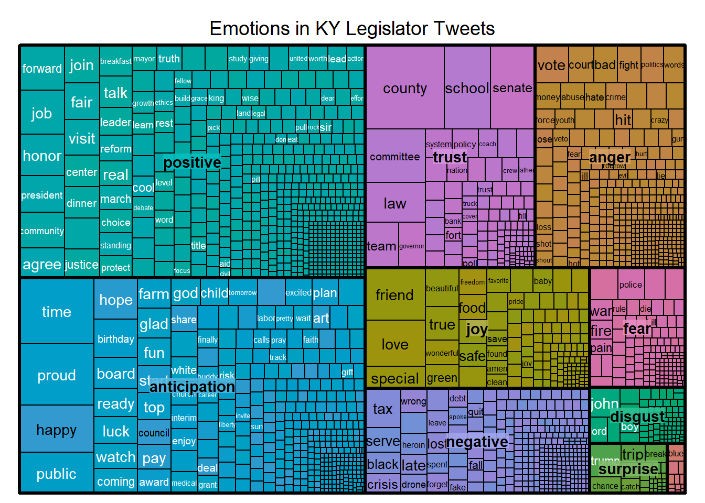

The women and men who make up the Kentucky legislature use Twitter often to communicate with themselves, their constituents, and Kentuckians as a whole. I analyzed the tweets of the 112 legislators who use the application for sentiment and usage patterns. It was fun project! I learned a lot and I hope you learn something from my work.
Method!
The Kentucky Legislative Research Commission director, David Byerman, manages a list of all the Kentucky legislators who use the twitter application. When I was a student in the Code Louisville program, I registered a twitter application that I never used. I repurposed that application to pull data from the twitter API about legislators tweets.
In order to grab the usernames of the legislators, I used the browser-based Twitter API console, and then used the R package rtweet to pull the timelines of the legislators. For this exercise, I grabbed only the tweets since January 1, 2017 (the 2017 legislative session started shortly after that). I pulled the public data about the legislators accounts on August 20, 2017, and last refreshed the timelines of the legislators around 10:00 PM on August 30, 2017.
As always, I used the R language to analyze the data and produce the visualizations seen below. The graphics are mostly faceted by party, which is good for being able to read names, but does result in the loss of some interesting information. I’m happy to make you custom graphs if you ask nicely.
Twitter: A Popularity Contest
Politicians, by nature, care about being popular. It’s how they get elected! Personally, I think politicians use twitter at rate disproportionate to the population as a whole because the app puts metrics around how popular each person is. The most important metrics to most people are the number of people who follow your account. (I recently cracked 1,000 and I was embarrassed about how excited I was). Here are is how many people follow each member of the legislature:

Rep. Brandon Reed (R-Hodgenville) is the legislator with the most followers. Rep. Attica Scott (D-Louisville), is second. Both of them are Freshmen legislators. Using a mean, Republicans have a larger average following, 1,449 to 1,346. However, Democrats have the advantage when we use median to judge the average, 1120 to 985.
Now, let’s take a look at who is on #TeamFollowBack:

Rep. Reed is definitely NOT on #TeamFollowBack, as he only follows 253 accounts, 97% fewer than the number that follow him. However, it’s pretty clear that Democratic women are good listeners – out of the six Democrats who follow the most accounts, five are women. Also, Julia Raque Adams is the only Republican woman in the top ten of her caucus using that metric.
Heavy Users
The twitter API gives us all the tweets from an account, including retweets. I thought it would be interesting to look at who used twitter the most – both by writing their own tweets, and by retweeting others.

Rep. Scott and Sen. Whitney Westerfield (R-Hopkinsville) (both former guests on My Old Kentucky Podcast!) are the heaviest users of twitter overall, with 2,584 and 2,265 tweets since the new year, respectively. However, when looking at original content only, Rep. Jason Nemes (R-Louisville) and Sen. Reggie Thomas (D-Lexington) are among the heavier users. These four legislators are the only members who have sent more than 750 original tweets since the beginning of 2017. The story of retweets is similar to the story about the number of accounts followed: three Democratic women lead their caucus.
Let’s look at the average by party:

While Democrats and Republicans have about the same amount of retweets per legislator (total number of retweets / number of caucus members on twitter), Democrats send significantly more original tweets.
Who Up?
The twitter API gives us access to the exact moment each tweet was sent. That’s fun. Let’s take a look at the tweets over time using density plots, and then a density plot of the time of day when each tweet was sent (this one is fun):

The legislative session kicked off in January, and then, after organizing, took a break for about a month. Then, they were back in session until March. This is reflected clearly in this data. Tweets are on the rise again, though! It might be about national politics, or the calls for a special session about pensions and tax reform.

Legislators stay up late! The MOST COMMON time at which tweets were sent was after midnight. Not until about about 2:30 AM does the tweeting stop! Y’all need to go to bed. Nothing good ever happened to an elected official after the bars close.
This is begging to be analyzed by party. Let’s take a look:


It looks like the peaks and valleys around the legislative session were more pronounced among Democrats. Democrats also seemed to have a significant bump in tweets during the early summer.
Regarding time of day: it looks like Republicans are the culprits when it comes to who stays up late. Democrats definitely stay up late as well, but the most common time for Dems to tweet is around noon. The GOP peaks about 1:00 AM.
Sentiment Analysis Using tidytext!
Sentiment analysis is a process by which individual words are associated with specific sentiments. To do this, data analysts utilize lexicons. Lexicons used in sentiment analysis identify words which are inherently positive and negative. These lexicons are the word of researchers (typically in linguistics) who have done the association. Sentiment analysis allows us to gauge the overall feelings in a piece of writing or group of statements. By performing this type of analysis, we gain insight into the mood of the writer/speaker/commenter. THIS WORK IS INHERENTLY PROBLEMATIC. Please know that while you read it, and don’t form your FULL opinion about these legislators using sentiment analysis. However, I think this kind of work is still really useful! Let’s first take a look at the sentiment by legislator using the Bing lexicon. The Bing lexicon was developed by Bing Liu (et al) and is a very straightforward positive-negative lexicon. It includes 6,788 words.

I used the incredible tidytext package to do this analysis. I pulled each word out of all the tweets, and scaled them using the Bing lexicon. Then, I scaled by the number of tweets. We’ve already done enough analysis on who tweets the most: this shows us on average, which legislators use the most positive and negative words. The lollipops above 0 represent the usage rate of positive words, while the lollipops below 0 represent the usage rate of negative words. This graph is arranged by net sentiment: positive words minus negative words. You can see that Rep. Dennis Horlander and Rep. Mary Lou Marzian (both D-Louisville) have fairly high usage rate of positive words, but are among the most negative Democratic tweeters because of their high rates of negative words. Meanwhile, Rep. Reed, the legislator with the most followers, is the most positive Republican. This might help to explain how he has so many followers despite not that many actual tweets.
Let’s take a look by party!

Republicans are more emotive than Democrats, at least according to Bing, et al. The GOP has a higher usage rate of negative words AND positive words. While the GOP is only slightly less negative than the Democrats, their usage rate of positive words is double that of the Democrats.
“Positive” and “Negative” are straightforward, but they aren’t very descriptive. The other lexicon I used is the NRC Emotion Lexicon. In addition to positive and negative sentiments, this lexicon also adds eight emotions, which adds a level of specificity into the analysis. The NRC lexicon includes 13,301 words, which is WAY more than Bing. The best way to view this is in a treemap:

It looks like the emotions most likely to be expressed by Kentucky legislators are “positive” and “anticipation”. I think it’s good to have forward looking legislators! It also appears that emotions that tile towards “positive” such as “trust” and “joy” outnumber those that tilt negative, like “fear” and “disgust”.
In Conclusion
I hope you found some of this a little informative! I enjoyed putting it together. If you’d like to dig deeper, check out this shiny app I built. You can drill down to view the twitter behavior of individual legislators! (I hope they don’t get TOO mad at me – I’ll take it down if they promise to raise taxes on cigarettes and expand the sales tax to luxury services). If you want to reach me, please do so at rkahne [at] gmail.com, or, of course, on Twitter [@rkahne](https://twitter.com/rkahne).